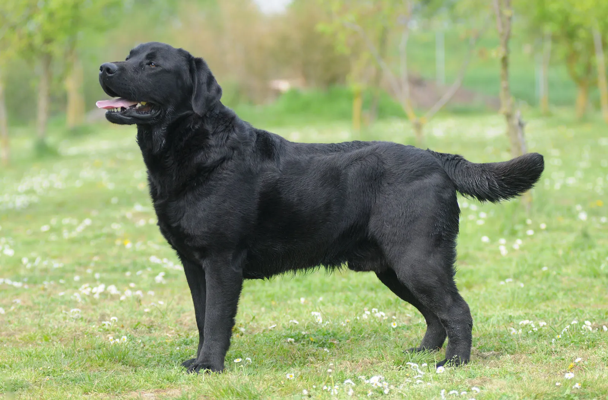

Adopt a Pet
Pet Name: Bella

Breed: Labrador Retriever
Age: 2 years
Description: Bella is a friendly and energetic dog who loves to play fetch and go for long walks.
Pet Name: Simba

Breed: Maine Coon
Age: 3 years
Description: Simba is a majestic and affectionate cat who enjoys lounging in the sun and cuddling with humans.
Pet Name: Max

Breed: Golden Retriever
Age: 1.5 years
Description: Max is a playful and loyal dog who loves to chase squirrels and learn new tricks.
Pet Name: Luna

Breed: Siamese
Age: 2 years
Description: Luna is a beautiful and graceful cat with striking blue eyes. She enjoys lounging by the window and playing with feather toys.
Pet Name: Rocky

Breed: German Shepherd
Age: 4 years
Description: Rocky is a loyal and protective dog who loves going on hikes and playing fetch in the park.
Pet Name: Daisy

Breed: Beagle
Age: 1 year
Description: Daisy is a sweet and playful puppy who enjoys exploring the outdoors and cuddling with her human family.